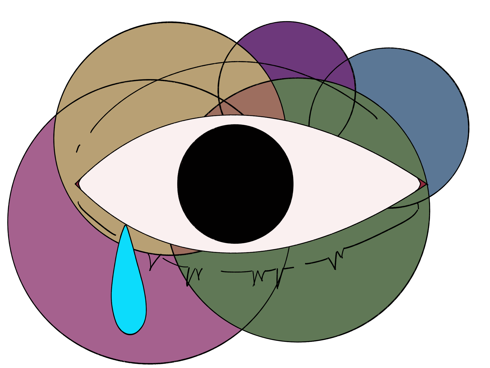

mentas
men and mental health,
the burden with toxic masculinity.
Men are less likely to discuss or seek help for mental health problems because of societal expectations and traditional gender roles. While both men and women are affected by mental illnesses, the prevalence of mental illnesses in males is generally lower than in women. Men with mental diseases are also less likely than women to have sought mental health therapy in the preceding years.
